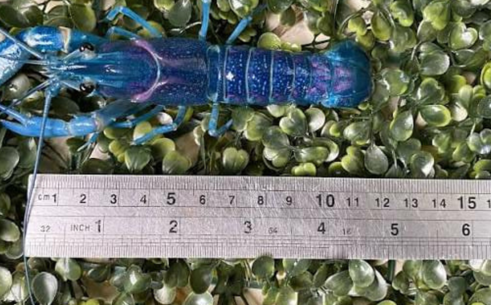
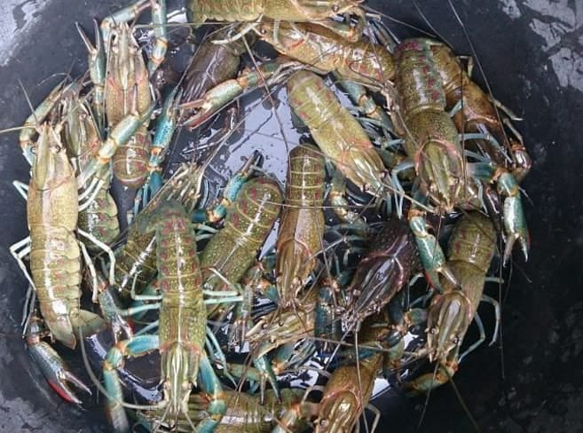

Lobster air tawar memiliki banyak sebutan di Indonesia. Ada yang menyebutnya sebagai udang karang atau udang batu. Ada juga yang menyebut hewan ini dengan istilah Crayfish. Lobster air tawar memiliki kekerabatan dengan udang dan kepiting karena sama-sama termasuk hewan beruas dan memiliki rangka luar atau eksoskeleton.
Lobster air tawar dalam bahasa ilmiahnya disebut Cherax Quadricarinatus, merupakan salah satu jenis krustasea yang hidup di air tawar, seperti sungai, danau rawa, kolam, serta perairan yang memiliki kondisi air sesuai untuk pertumbuhannya. Hewan ini umumnya menyukai habitat yang memiki banyak tempat untuk berlindung, seperti bebatuan, tumbuhan air, atau celah-celah di dasar perairan. Lobster air tawar juga dapat dibudidayakan di kolam atau wadah khusus dengan kualitas air yang terjaga. Suhu, pH, kadar oksigen, dan kebersihan air merupakan faktor penting yang memengaruhi kehidupan lobster air tawar.
Tubuh lobster air tawar terdiri atas bagian kepala dan dada yang menyatu menjadi sefalotoraks serta bagian perut atau abdomen. Tubuhnya dilindungi oleh cangkang keras dan beruas-ruas yang berfungsi sebagai pelindung dari benturan dan ancaman dari lingkungan. Lobster air tawar memiliki sepasang antena panjang yang digunakan sebagai alat peraba dan untuk membantu mengenali keadaan di sekitarnya. Hewan ini juga mempunyai sepasang capit besar yang disebut chela. Capit tersebut berfungsi untuk mengambil makanan, mempertahankan diri, dan berinteraksi dengan lingkungan.
Selain itu, lobster air tawar memiliki beberapa pasang kaki jalan yang digunakan untuk bergerak di dasar perairan. Pada bagian abdomen terdapat beberapa pasang kaki renang yang membantu lobster bergerak di dalam air. Bagian ekornya mempunyai struktur seperti kipas yang membantu mengatur gerakan ketika berenang atau bergerak mundur dengan cepat.
Tubuh lobster air tawar berbentuk memanjang. Ukuran tubuhnya bergantung pada usia, jenis, kondisi lingkungan, dan pemeliharaannya. Bagian kepala dan dada hewan ini tampak lebih besar dibandingkan bagian perut.
Warna tubuh lobster air tawar umumnya dipengaruhi oleh jenis dan kondisi lingkungannya. Ada yang berwarna biru, cokelat, kehijauan, hingga kehitaman. Pada Cherax Quadricarinatus, lobster jantan dewasa memiliki warna kemerahan pada bagian tepi capit yang menjadi salah satu ciri khasnya. Cangkang lobster dapat terlihat mengilap ketika terkena cahaya karena permukaannya yang keras.
Lobster air tawar masuk dalam golongan hewan omnivor karena dapat memakan berbagai jenis makanan, seperti tumbuhan air, alga, sisa-sisa organisme, hewan kecil, dan bahan organik yang terdapat di dasar perairan. Dalam kegiatan budidaya, lobster air tawar dapat diberi pakan berupa pelet khusus, sayuran, atau bahan pakan lain yang sesuai.
Lobster air tawar selama hidupnya mengalami beberapa tahapan, yaitu telur, calon anakan lobster, juvenile (lobster muda), lobster dewasa. Daur hidupnya dimulai dari perkawinan antara lobster jantan dan betina. Setelah terjadi pembuahan, telur akan berkembang dan dibawa oleh induk betina pada bagian bawah tubuhnya. Telur tersebut dijaga sampai menetas. Anak lobster yang telah menetas masih berada di sekitar induknya untuk beberapa waktu sebelum dapat memulai hidup mandiri.
Lobster mengalami pertumbuhan melalui proses pergantian kulit yang disebut molting. Karena cangkangnya keras dan tidak dapat membesar mengikuti pertumbuhan tubuh, lobster harus melepaskan cangkang lama dan membentuk cangkang baru yang lebih besar.
Setelah beberapa kali mengalami pergantian kulit, lobster akan tumbuh menjadi lobster muda dan kemudian menjadi lobster dewasa. Lobster dewasa selanjutnya dapat berkembang biak dan melanjutkan siklus hidupnya.
Lobster air tawar memiliki berbagai manfaat bagi manusia dan lingkungan. Dalam bidang perikanan, lobster air tawar merupakan salah satu komoditas yang dapat dibudidayakan dan memiliki nilai ekonomi. Budidaya lobster air tawar dapat menjadi kegiatan usaha yang menghasilkan pendapatan bagi masyarakat. Selain itu, lobster air tawar juga dapat dimanfaatkan sebagai bahan pangan karena memiliki daging yang dapat diolah menjadi berbagai macam hidangan. Salah satu keunggulan dari olahan lobster air tawar adalah kadar kolesterolnya yang lebih rendah dibanding olahan lobster air laut. Hingga saat ini sudah banyak pembudidaya lobster air tawar yang berhasil mengembangkan usahanya seperti Wani Lobster Farm yang berada di wilayah Sawangan Kota Depok.
Lobster air tawar juga memiliki manfaat dalam bidang pendidikan dan penelitian. Hewan ini dapat digunakan sebagai objek untuk mempelajari kehidupan hewan air, pertumbuhan, perkembangbiakan, serta proses pergantian kulit pada krustasea.
Sementara peran ekologis lobster air tawar dalam ekosistem sebagai pembersih dasar perairan dengan memakan sisa-sisa organik dan detritus. Hewan ini membantu mengontrol populasi organisme kecil, menjadi bagian dari rantai makanan, serta mendukung daur ulang nutrien alami di habitatnya.
